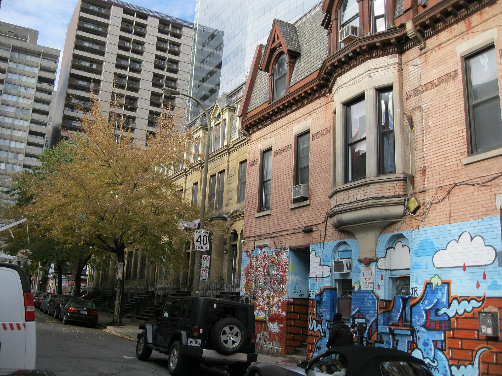

| Place | Local name | Phase years | Storeys | Roof | Window | Cladding | Garage |
|---|---|---|---|---|---|---|---|
| Gatineau | Complex gabled-roof house (maison à toit complexe à pignon) La maison à toit complexe à pignon | 1900 – 1925 | 2.5 | gabled-multi | vertical | clay-brick-red, wood-clapboard | – |
| Lachine (borough of Montréal) | Bourgeois brick house in the Victorian taste Maison bourgeoise en brique au goût victorien | 1855 – 1930 | – | – | – | brick | – |
| Lévis | Victorian house Victorien | 1861 – 1900 | 2–3 | gabled-multi | – | wood-clapboard, wood-shingle-cut, clay-brick | – |
| Le Plateau-Mont-Royal (borough of Montréal) | Row urban house La maison urbaine contiguë | 1880 – 1914 | 2–3 | flat | – | stone, clay-brick | none |
| Québec City | Neo-Queen Anne house Néo-Queen Anne | 1875 – 1930 | 1.5–2.5 | gabled-multi | vertical | clay-brick-red, stone, wood, roughcast, stucco | – |
| Saint-Lambert | Queen Anne style house La maison de style Queen Anne | 1875 – 1930 | 2.5 | gabled-or-hipped | vertical | clay-brick, wood-clapboard, wood-shingle | none |
| Ville-Marie (Montréal) | Freestanding greystone mansion Demeure bourgeoise isolée du Mille carré doré | 1850 – 1930 | – | – | – | montreal-greystone, cut-stone, clay-brick | – |
| Ville-Marie (Montréal) | Greystone terrace Maison en rangée de pierre grise | 1850 – 1930 | 2.5 | – | – | montreal-greystone, stone, clay-brick | – |
| Westmount | Queen Anne house Maison de style Queen Anne | 1885 – 1900 | – | gabled-multi | vertical | clay-brick-red, stone, wood | – |


